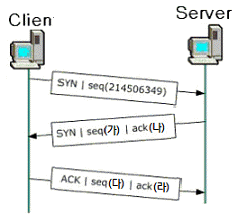
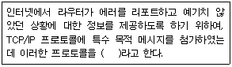
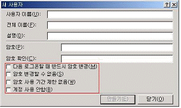
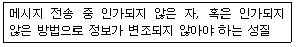
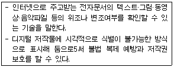
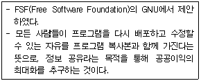

네트워크관리사-1급 (2011-04-24 기출문제)
1과목: TCP/IP
1. IPv4에서 네트워크 ID와 호스트 ID를 할당할 때 적용되는 규칙으로 옳지 않은 것은?
- 같은 네트워크 구획상의 호스트는 똑같은 네트워크 ID를 갖는다.
- 네트워크 구획상의 각 호스트는 유일한 호스트 IP 어드레스를 갖는다.
- 네트워크 ID가 '127'로 시작하는 주소는 공인 IP 어드레스로 할당 받을 수 없다.
- 네트워크 ID의 비트(bit)가 모두 '1'일 때는 지역 네트워크(Local Network)를 의미한다.
(정답률: 54%)

2. 10Base-T 이더넷 NIC에서 사용하는 인코딩 방식은?
- NRZ-I
- NRZ-L
- Manchester
- AMI
(정답률: 알수없음)
3. 무선 랜 표준 기술과 사용하는 변조방식 연결로 옳지 않은 것은?
- IEEE 802.11a : OFDM
- IEEE 802.11b : HR-DSSS
- IEEE 802.11g : FHSS
- IEEE 802.11n : OFDM
(정답률: 알수없음)
4. TCP의 프로토콜 이름과 일반 사용(Well-Known) 포트 연결로 옳지 않은 것은?
- SMTP : 25
- HTTP : 80
- POP3 : 100
- FTP-Data : 20
(정답률: 80%)
5. B Class '128.10.0.0' 주소를 갖는 곳에서 Host 수 150개, 물리적인 망 100개를 구성할 경우 잘못된 것은?
- 물리적인 망 구조를 고려할 필요 없이 host ID 부분에 1~150까지 주소를 할당한다.
- 물리적인 망 100개가 구성되므로 라우터도 100대가 필요하고 이에 대해 개별적인 host주소를 지정하여 관리한다.
- 150개 호스트 사이에 있는 모든 라우터는 각 호스트가 존재하는 위치를 알아야 한다.
- 새로운 호스트가 추가되면 라우터의 라우팅 정보를 갱신해야 한다.
(정답률: 100%)
6. 다음은 TCP 연결에 있어서 세 방향 핸드 쉐이킹을 나타낸 그림이다. '가~라'에 들어갈 번호로 옳지 않은 것은? (단, 서버로부터의 초기 시퀀스번호는 '323998684' 이다.)

- (가) - 323998684
- (나) - 214506350
- (다) - 214506351
- (라) - 323998683
(정답률: 알수없음)
7. 인터넷 서비스와 프로토콜의 관계를 표시한 것 중 올바른 것은?
- E-Mail : SMTP를 이용하여 E-Mail을 전송할 수 있다.
- WWW : NNTP를 이용하여 인터넷 문서를 전송할 수 있다.
- Telnet : SNMP를 이용하여 서버에 로그인한 후 작업을 할 수 있다.
- Usenet - ICMP를 이용하여 원하는 게시물을 검색할 수 있다.
(정답률: 알수없음)
8. 인터넷의 도메인 네임에 대한 설명 중 옳지 않은 것은?
- 도메인 네임에 컴마(,), 언더바(_) 등의 기호를 사용할 수 있다.
- 최상위 도메인은 일반 도메인과 국가 도메인으로 구성된다.
- 도메인 네임의 길이는 최대 256자까지 가능하다.
- 도메인 네임은 문자로 되어 있고, IP Address는 숫자로 되어 있다.
(정답률: 알수없음)
9. 서브넷 마스크(Subnet Mask)에 대한 설명 중 올바른 것은?
- IP Address에서 Network Address와 Host Address를 구분하는 기능을 수행한다.
- 하나의 Network를 두 개 이상의 Network로 나눌 수 없다.
- IP Address는 효율적으로 관리하나 트래픽 관리 및 제어가 어렵다.
- 불필요한 브로드캐스트 메시지를 제한할 수 없다.
(정답률: 알수없음)
10. IPv6에 대한 설명으로 옳지 않은 것은?
- 확장된 헤더에 선택사항들을 기술할 수 있다.
- 멀티캐스트를 새로 도입하였다.
- 특정한 흐름에 속해 있는 패킷들을 인식할 수 있다.
- 패킷의 출처 인증, 데이터 무결성의 보장 및 비밀의 보장 등을 위한 메커니즘을 지정할 수 있다.
(정답률: 65%)
11. FTP에서 여러 개의 파일을 수신할 때 사용하는 명령어는?
- cdup
- mget
- get
- hash
(정답률: 40%)
12. OSI 7 Layer의 전송 계층에 해당하며, 비연결 지향형의 프로토콜은?
- ARP
- UDP
- SNMP
- RARP
(정답률: 알수없음)
13. 네트워크상에서 기본 서브넷 마스크가 구현될 때, IP Address가 '203.240.155.32'인 경우 아래 설명 중 올바른 것은?
- Network ID는 203.240.155이다.
- Network ID는 203.240 이다.
- Host ID는 155.32가 된다.
- Host ID가 255일 때는 루프백(Loopback)용으로 사용된다.
(정답률: 알수없음)
14. IPv6은 몇 비트의 Address 필드를 가지고 있는가?
- 32
- 64
- 128
- 256
(정답률: 75%)
15. 괄호 안에 들어갈 프로토콜은?

- FTP
- ICMP
- ARP
- TCP
(정답률: 알수없음)
16. ARP의 기능에 대한 설명 중 옳지 않은 것은?
- 모든 호스트가 성공적으로 통신하기 위해서 각 하드웨어의 물리적인 주소문제를 해결하기 위해 사용된다.
- 목적지 호스트의 IP Address를 MAC Address로 바꾸는 역할을 하며, 목적지 호스트가 시작지의 IP Address를 MAC Address로 바꾸는 것을 보장한다.
- 기본적으로 ARP 캐시(Cache)를 사용하지 않으며, 매번 서버와 통신할 때 마다 MAC Address를 요구한다.
- ARP 캐시(Cache)는 MAC Address와 IP Address의 리스트를 저장한다.
(정답률: 85%)
2과목: 네트워크 일반
17. TCP/IP 4 Layer 중 전송 계층에 속하는 것은?
- Telnet
- FTP
- IP
- TCP
(정답률: 72%)
18. 데이터교환 방식에서 'N'개의 Station이 서로 통신하기 위해서 Full Mesh로 연결할 경우 필요한 선로의 수는?
- N(N-1)/2
- N!(N-1)/2
- 2N(N+1)/2
- N(N+1)/2
(정답률: 알수없음)
19. 정보통신 관련 국제 표준 기구로 옳지 않은 것은?
- ITU(International Telecommunication Union)
- ICO(International Computing Organization)
- ISO(International Organization for Standardization)
- EIA(Electronic Industries Alliance)
(정답률: 40%)
20. 아날로그 신호의 특징으로 옳지 않은 것은?
- 신호의 형태가 연속적이다.
- 신호의 표현은 진폭과 주파수이다.
- 신호의 단위는 Hz이다.
- 신호의 형태가 이산적이다.
(정답률: 알수없음)
21. 광섬유의 종류에 해당되지 않은 것은?
- 다중모드 계단형
- 다중모드 언덕형
- 단일모드
- 복합모드
(정답률: 55%)
22. 오류 검출 방식인 ARQ 방식 중에서 일정한 크기 단위로 연속해서 프레임을 전송하고 수신측에 오류가 발견된 프레임에 대하여 재전송 요청이 있을 경우 잘못된 프레임만을 다시 전송하는 방법은?
- Stop-and-Wait ARQ
- Go-back-N ARQ
- Selective-repeat ARQ
- Adaptive ARQ
(정답률: 65%)
23. 반송파의 진폭을 일정하게 유지한 채 반송파의 주파수를 신호파에 따라 변화시키는 방식은?
- FM
- AM
- PM
- PCM
(정답률: 알수없음)
24. 물리적 회선을 공유하면서도 회선이 할당된 것처럼 동작하며, 연결설정, 데이터전송, 연결해제 단계를 거치는 방식은?
- 회선교환방식
- 데이터그램방식
- 가상회선교환방식
- 메시지교환방식
(정답률: 75%)
25. 네트워크 관리 및 네트워크 장치와 그들의 동작을 감시, 총괄하는 프로토콜은?
- ICMP
- SNMP
- SMTP
- IGMP
(정답률: 알수없음)
26. Peer to Peer 네트워크에 대한 설명 중 올바른 것은?
- 클라이언트/서버 시스템을 말한다.
- 노드와 노드간의 메시지 전달은 반드시 서버를 거쳐 이루어진다.
- 네트워크에 연결된 각각의 컴퓨터가 클라이언트인 동시에 서버로 운영된다.
- 데이터베이스 공유 서비스에 적합하고, 네트워크 전체의 관리 일원화가 용이하다.
(정답률: 46%)
27. 네트워크 연결서비스 중 53Byte의 고정된 길이의 Cell을 가지며 패킷 스위치 방식을 사용하여 데이터를 전송하는 것은?
- ATM
- ISDN
- SONET
- X.25
(정답률: 50%)
3과목: NOS
28. Windows 2000 Server에서 파일 및 프린터 서버를 지원하기 위해 반드시 설치해야하는 네트워크 프로토콜은?
- SMTP
- TCP/IP
- NNTP
- ICMP
(정답률: 알수없음)
29. SQL문에서 데이터의 수정을 위해 사용되는 명령어는?
- select
- insert
- update
- delete
(정답률: 알수없음)
30. 아래 화면은 로컬 사용자 계정 만들기에서 '새 사용자' 대화상자이다. 기본적으로 '다음 로그온할 때 반드시 암호 변경(M)'에 체크되어 있다. Guest 계정 등과 같이 여러 사람이 하나의 계정을 사용할 때 어느 부분에 체크를 해야 하는가?

- 다음 로그온할 때 반드시 암호 변경
- 암호 변경할 수 없음
- 암호 사용 기간 제한 없음
- 계정 사용 안함
(정답률: 알수없음)
31. Windows 2000 Server에서 NetBIOS 컴퓨터 이름을 IP Address로 대응시킴으로서 TCP/IP 환경에서 NetBIOS 이름 풀기를 가능하게 하는 서비스는?
- DNS
- DHCP
- WINS
- PDC
(정답률: 알수없음)
32. Windows 2000 Server에서 ‘ICQA2007’라는 이름의 서버에 익명 액세스를 허용할 때, 이들 익명 사용자에 대한 자원의 제한은 어떤 계정을 통해 가능한가?
- Anonymous
- IUSER_ICQA2007
- Anonymous_ICQA2007
- Guest_ICQA2007
(정답률: 30%)
33. MS-SQL 2000 Server에서 데이터를 백업하려고 할 때 백업의 내용과 설명이 잘못 연결된 것은?
- 풀 백업 - 데이터 전체를 백업하는 것이다. 다른 방법의 백업을 하기 전에 풀백업을 먼저 해주어야 한다.
- 트랜잭션 로그 백업 - 트랜잭션 로그만을 백업한 후 로그를 절단한다.
- 디퍼런셜 백업 - 마지막 풀 백업이후 변경된 데이터 페이지를 백업한다.
- 파일/파일그룹 백업 - 데이터베이스의 전체 로그를 백업 한다.
(정답률: 37%)
34. Windows 2000 Server의 'netstat' 명령어로 알 수 없는 정보는?
- TCP 접속 프로토콜 정보
- ICMP 송수신 통계
- UDP 대기용 Open 포트 상태
- 접속자 MAC 주소
(정답률: 알수없음)
35. 원격지에서 Windows 2000 Server에 접속하여 관리할 경우에 필요한 서비스는?
- FTP 서비스
- 원격 설치 서비스
- 터미널 서비스
- DHCP 서비스
(정답률: 47%)
36. Windows 2000 Server에서 DNS 설치에 대한 설명으로 옳지 않은 것은?
- Windows 2000 Server는 고정 IP Address를 가지고 있어야 한다.
- DNS 서비스는 설치 시 자동으로 설치가 되지 않으므로, 사용자가 직접 설치해야 한다.
- 관리자 권한이 있는 계정으로 로그온 하여야 한다.
- DNS 서비스는 Active Directory와 관련이 없다.
(정답률: 70%)
37. Linux에서 네트워크 환경설정 파일을 수정한 경우에는 네트워크를 재 시작해야 한다. 컴퓨터를 재부팅하지 하고 네트워크 부분만을 재시작하는 명령어 사용방법으로 올바른 것은?
- /etc/init.d/network restart
- /etc/init.d/network start
- /etc/init.d/network stop
- /etc/init.d/network again
(정답률: 59%)
38. Windows 2000 Server의 네트워크 방식 중 모든 계정과 자원을 특정 서버에서 관리하는 중앙 집중식 방식은?
- 도메인(Domain) 방식
- 워크그룹(Workgroup)방식
- 사용자그룹(Usergroup)방식
- System 방식
(정답률: 62%)
39. OU(Organization Unit)에 대한 설명으로 올바른 것은?
- 하나의 관리 단위로서 공통성을 가진 작업 그룹
- 포리스트 내의 모든 도메인에 대한 개체 정보
- 사용자나 컴퓨터 등 물리적으로 구분되는 독립 단위
- 액티브 디렉터리에서 각종 보안 및 정책 관리의 최소 단위
(정답률: 알수없음)
40. Windows 2000 Server의 DDNS(Dynamic DNS)에 대한 설명으로 옳지 않은 것은?
- DDNS는 새로운 호스트가 추가되거나, 수정, 삭제될 때마다 호스트들에 대한 정보를 DNS데이터베이스에 자동으로 갱신해 준다.
- Windows 2000 Server에서는 기본적으로 DDNS와 DHCP를 지원해 준다.
- DDNS 설치는 먼저 [시작] - [설정] - [제어판] - [프로그램추가/제거]를 실행한다.
- 동적 IP Address가 필요하다.
(정답률: 40%)
41. Linux의 네트워킹 데몬 프로그램에 대한 설명으로 올바른 것은?
- Apache를 이용하여 DHCP를 구현한다.
- Telnet을 이용하여 컴퓨터간의 파일을 전송한다.
- PPP를 이용하여 전자우편을 전송한다.
- Bind를 이용하여 DNS를 구현한다.
(정답률: 55%)
42. Linux의 퍼미션(Permission)에 대한 설명 중 옳지 않은 것은?
- 파일의 그룹 소유권을 변경하기 위한 명령은 ‘chgrp’이다.
- 파일의 접근모드를 변경하기 위한 명령은 ‘chmod’이다.
- 모든 사용자에게 모든 권한을 부여하려면 권한을 ‘666’으로 변경한다.
- 파일의 소유권을 변경하기 위한 명령은 ‘chown’이다.
(정답률: 75%)
43. Windows 2000 Server에서 NTFS 사용 권한의 특징에 대한 설명 중 옳지 않은 것은?
- NTFS 파일 시스템으로 포맷되어 있으면 사용권한을 부여할 수 있다.
- 공유폴더 사용권한과 달리 파일과 폴더 각각에 대해서 부여할 수 있다.
- 사용자가 로컬로 로그온해서 자원을 액세스하거나 네트워크를 통해 액세스했을 경우 모두 적용된다.
- 각각의 사용자계정에는 부여할 수 있으나 그룹계정에는 부여할 수 없다.
(정답률: 50%)
44. Windows 2000 Server의 DACL(Directory Access Control List)에 대한 설명으로 올바른 것은?
- 한 개체에 대한 접근 제어 항목의 리스트로 위임 할 때 사용된다.
- 사용자가 원하는 권한을 가질 수 있게 만들어 준다.
- 관리자가 해야 하는 일을 좀 더 편하게 하기위해 중앙 에 업무를 모은다.
- 한 사용자에 대한 ACE(Access Control Entry)가 모여 있는 것을 의미한다.
(정답률: 알수없음)
45. Linux에서 Windows 시스템 간에 파일 및 프린트 공유 등을 할 수 있게 하는 데몬은?
- Winshare
- SAMBA
- Silk
- NTlink
(정답률: 알수없음)
4과목: 네트워크 운용기기
46. SCSI에 대한 다음 설명이 옳지 않은 것은?
- Wide SCSI는 16비트를 지원하며 병렬 데이터 전송을 한다.
- Wide SCSI는 68핀 케이블을 사용한다.
- SCSI-3은 Fast SCSI-20과 Fast SCSI-40으로 구분한다.
- Fast SCSI-20은 비동기 전송 모드, Fast SCSI-40은 동기 전송 모드로 각각 20MB/s, 40MB/s의 전송률을 보인다.
(정답률: 29%)
47. Cisco Router 내에서 하고자 하는 의도와 관련 config의 연결로 옳지 않은 것은?
- Router의 패스워드 설정 - enable password cisco
- Router의 호스트 이름 설정 - hostname ICQA-Router
- Router의 DNS서버 설정- ip name server 168.126.63.1
- Router의 시각 설정 - time set [hh:mm:ss]
(정답률: 알수없음)
48. 논리연결제어 프로토콜(LLC Protocol)은 같지만, 매체 접근 제어(MAC)는 같거나 다른 2개의 구내 정보 통신망(LAN)을 상호 접속하여 데이터를 주고받을 수 있게 하는 장치는?
- Repeater
- Router
- Gateway
- Bridge
(정답률: 47%)
49. A, B사가 합병한 관계로 네트워크를 통합하여 운영하고 있다. 하지만 이전에 서로 다른 E-Mail 프로그램을 사용하고 있어서 정상적으로 메일을 주고받으려면 Gateway가 필요하다. 이 Gateway의 기능은?
- 메시지 포맷 변환 기능
- 주소(Address) 구조 변환 기능
- 스팸 메일 차단 기능
- 보안 기능
(정답률: 36%)
50. Ethernet에서 UTP(10BaseT) Cable의 최대 Segment 길이는?
- 200m
- 185m
- 500m
- 100m
(정답률: 알수없음)
5과목: 정보보호개론
51. 정보보호 서비스 개념에 대한 아래의 설명에 해당 하는 것은?

- 무결성
- 부인봉쇄
- 접근제어
- 인증
(정답률: 100%)
52. 공개키 기반구조(PKI)에 대한 기술로 옳지 않은 것은?
- PKI는 공개키 인증서에 바탕을 두고 구축되어야 한다.
- CA(Certificate Authority)는 최종 개체(End Entity)를 인증하는 전자증명서 발행 역할을 수행한다.
- PKI는 사용자 공개키와 사용자 ID를 안전하게 묶는 방법과 공개키를 신뢰성 있게 관리하기 위한 수단을 제공한다.
- CA의 공개키는 자동적으로 사용자에게 전달되지 않기 때문에 인증서를 사용할 때마다 CA에게 CA의 공개키를 요구하여야 한다.
(정답률: 59%)
53. Windows 2000 Server에서 IPsec 프로토콜에 대한 설명으로 옳지 않은 것은?
- Windows NT에서부터 내장되어 변조와 가로채기 수준에서의 데이터 전송의 안전을 보장한다.
- OSI 참조모델의 전송 계층아래에 적용되기 때문에 응용 프로그램의 특정한 설정은 필요치 않다.
- IPsec는 인증헤더를 사용하고 보안 페이로드를 캡슐화 하여 프라이버시, 인증과 부인방지 기능을 제공한다.
- Windows 2000 Server의 IPsec는 데이터 무결성, 동적 재입력, 중앙 집중 관리, 유연성 등의 부가적인 서비스를 제공한다.
(정답률: 0%)
54. 스크리닝 라우터(Screening Router)에 관한 설명으로 옳지 않은 것은?
- OSI 참조 모델의 3계층과 4계층에서 동작
- IP, TCP, UDP 헤더 내용을 분석
- 하나의 스크리닝 라우터로 네트워크 전체를 동일하게 보호 가능
- 패킷 내의 데이터에 대한 공격 차단이 용이함
(정답률: 28%)
55. 방화벽의 세 가지 기본 기능으로 옳지 않은 것은?
- 패킷 필터링(Packet Filtering)
- Port Mirroring
- VPN(Virtual Private Network)
- 로깅(Logging)
(정답률: 알수없음)
56. 웹 브라우저, 웹 서버 간에 데이터를 안전하게 교환하기 위한 프로토콜로서, 웹 제품뿐 아니라 FTP나 Telnet 등 다른 TCP/IP 애플리케이션에 적용할 수 있는 보안기술은?
- SET
- SSL
- PPTP
- PGP
(정답률: 67%)
57. 아래에서 설명하는 기술의 명칭은?

- 공개키 기반구조(PKI)
- SSL(Secure Socket Layer)
- 워터마킹(Watermarking)
- 전자서명(Digital Signature)
(정답률: 59%)
58. 대칭키 암호 알고리즘 SEED에 대한 설명으로 올바른 것은?
- 국제적 컨소시움에서 개발하였다.
- SPN 구조로 이루어져 있다.
- 20 라운드를 거쳐 보안성을 높였다.
- 20⑤년 ISO/IEC 국제 블록암호알고리즘 표준으로 제정되었다.
(정답률: 알수없음)
59. S/MIME에 대한 설명으로 옳지 않은 것은?
- 전자우편 보안 서비스로, HTTP에서는 사용이 불가능하다.
- X.509 형태의 S/MIME 인증서를 발행하여 사용한다.
- 전자 서명과 암호화를 동시에 사용할 수 있다.
- 대칭키 암호 알고리즘을 사용하여 전자우편을 암호화 한다.
(정답률: 54%)
60. 다음 설명이 뜻하는 것은?

- Copyleft
- 지적재산권
- 양벌규정
- Copyright
(정답률: 46%)